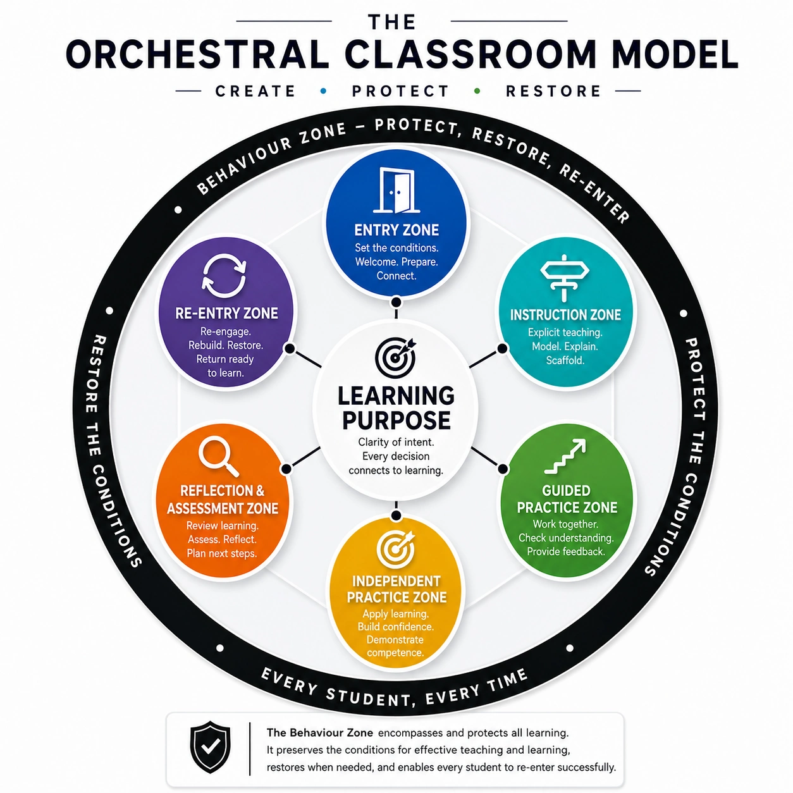

Every student.
Every time.
The Orchestral Classroom Model helps educators create, protect and restore the conditions so every student can re-enter successfully and thrive.
A framework for classrooms that work for everyone.
OCM is a practical, research-informed framework that preserves the conditions for effective teaching and learning, restores them when needed, and enables every student to re-enter successfully.

Real classrooms. Real impact.
See how schools can use the Six Zones to create predictable learning environments where every student belongs, engages and succeeds.
Explore classroom stories →Books, resources and training to bring OCM to life.
From flagship books to professional learning and practical resources, OCM is designed to move beyond theory and into implementation.
Browse resources →Conditions
for Learning
Creating the environment where every student can thrive.
The Conditions for LearningTeach
Connect
Inspire
Build stronger classrooms through relationships that matter.
Teach · Connect · InspireBehaviour Is
Communication
Understand, respond and protect learning.
Behaviour Is CommunicationEvery Student,
Every Time
The Orchestral Classroom Model in action.
Every Student, Every Timetemplates, guides
and more.
Explore all →